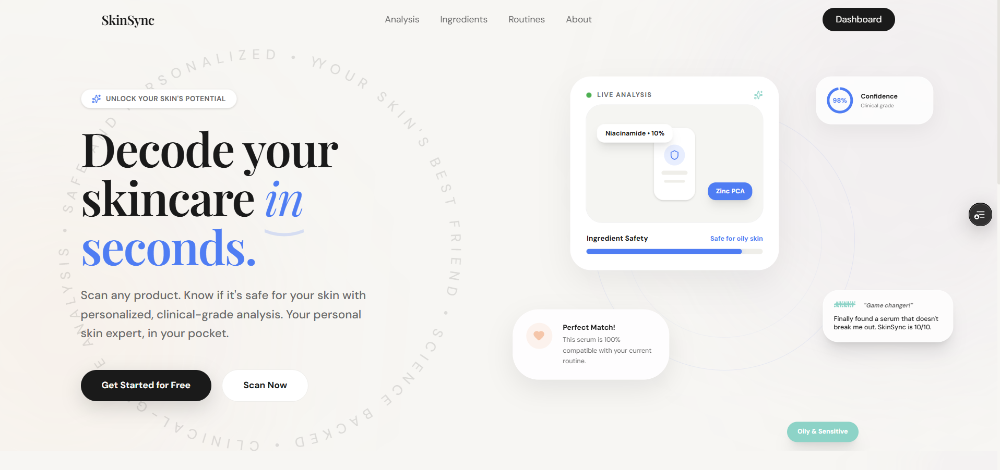
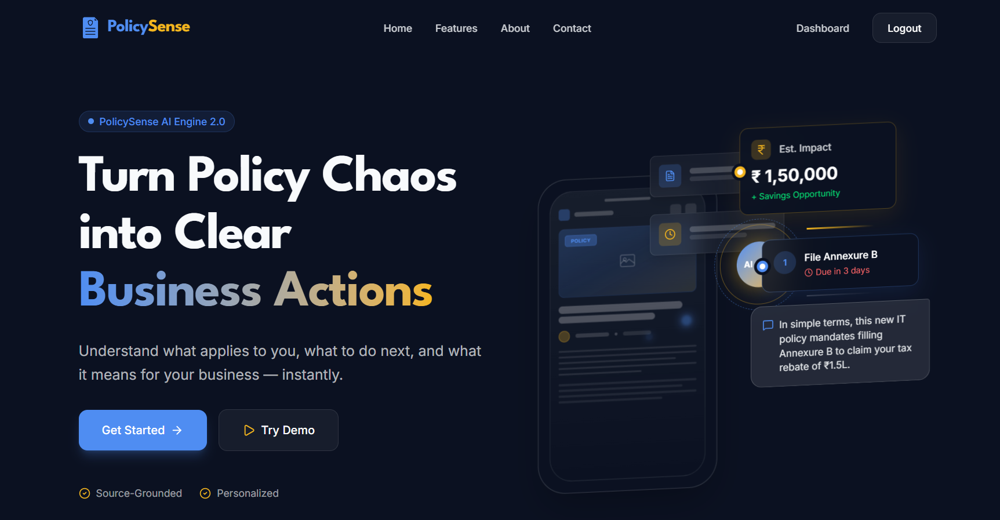
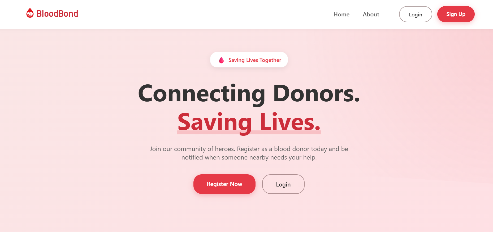
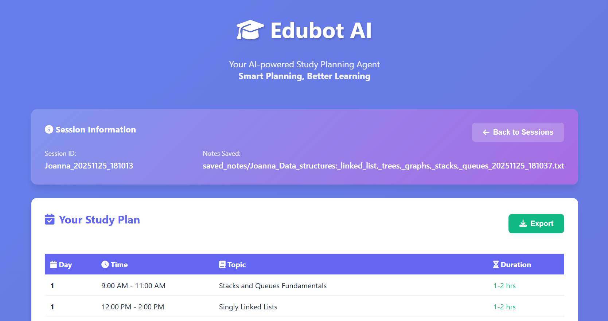
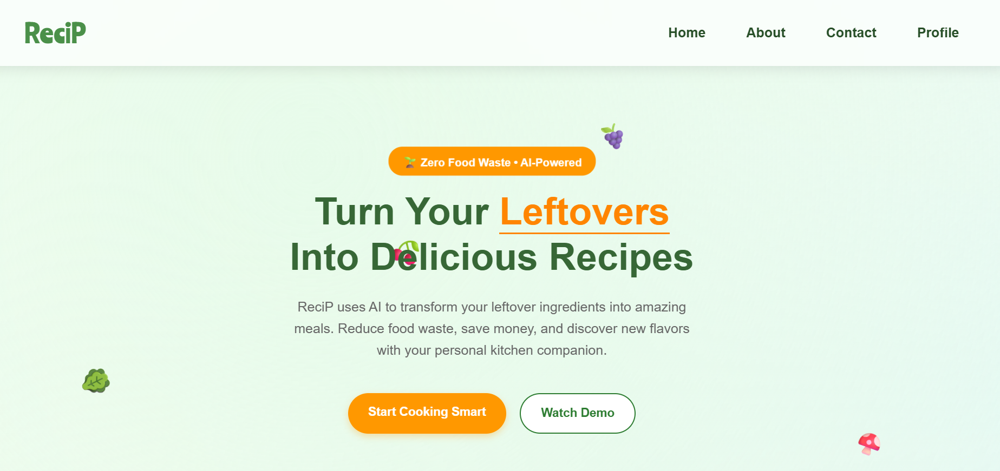
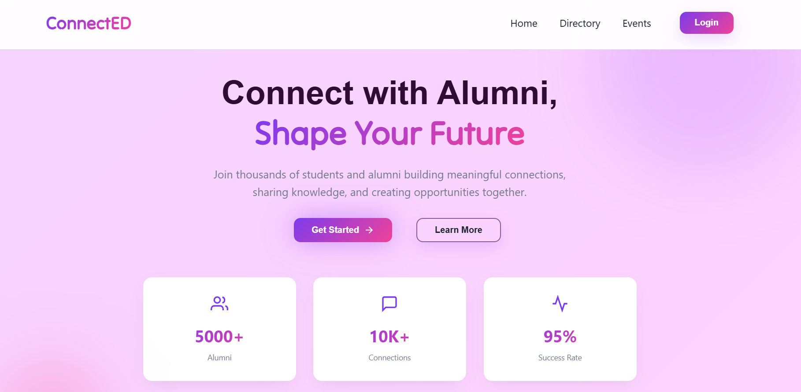
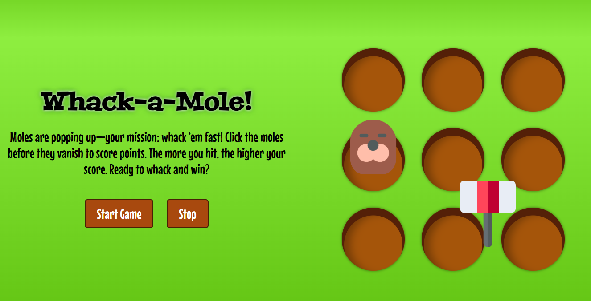
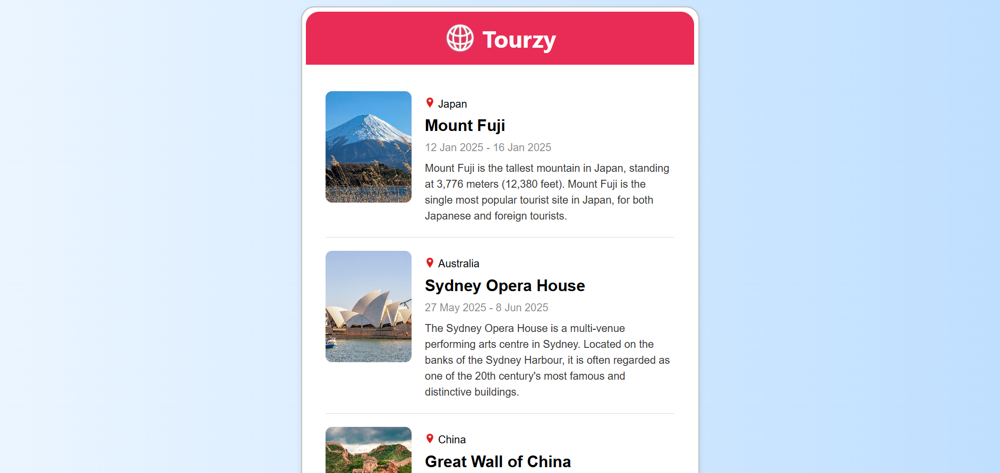

Here are a few personal projects...

SkinSync is a privacy-first, AI-powered skincare scanner that analyzes product ingredients and provides personalized insights based on your skin type, sensitivities, and history. Built with a local-first architecture, the app minimizes backend dependency while delivering fast, intelligent results using OCR + LLM.

PolicySense is an AI-native personalization layer designed to transform unstructured business and policy news into actionable, decision-ready intelligence using a multi-agentic AI system for automated analysis and recommendation based on the user profile.

BloodBond is a web app that connects blood donors with those in urgent need using real-time location. It enables quick donor availability updates, secure authentication, and instant notifications, promoting life-saving connections through a simple and efficient interface.

EduBot AI is a multi-agent system designed to automate study planning. It transforms raw syllabi into structured day-wise plans, generates concise notes, curates high-quality resources, and tracks progress — all in under 30 seconds.

ReciP is an AI-powered recipe assistant that reduces food waste by detecting ingredients from leftover meals, groceries, or fridge images using Hugging Face computer vision models, and a simple HTML, CSS, and JavaScript frontend to generate sustainable recipes from detected ingredients.

ConnectED is a simple yet impactful web platform designed to allow students to seek guidance, connect with mentors, explore alumni success stories, and stay updated on events and meetups. The platform focuses on ease of use, structured navigation, and purposeful interactions.

This Whack-a-Mole game, built using HTML, CSS, and JavaScript, offers vibrant graphics and lively sound effects for an engaging experience. Moles appear randomly from holes, testing your reflexes as you try to whack them and earn high scores.

Tourzy is a visually appealing travel blog designed to captivate users with stunning imagery and engaging content. Built using React and CSS, it offers a seamless user experience, encouraging visitors to explore travel options and book their next adventure.